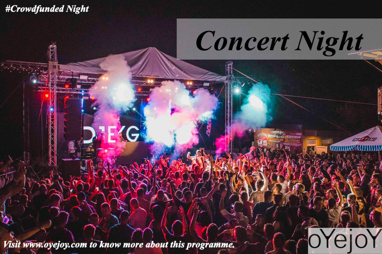

Concert Night

Trivia- Music is known to be the most powerful healer and stress killer.
We promise you to give the most memorable moment of your life.
How does the concert night function?
Participants----training------concert night
What makes us different?
The performances that we offer sets us apart from any other events company.
We aspire to showcase the local talent and hence the performances are also done by the
participants who volunteer in making the night joyful.
Who are the participants?
Participants are a bunch of interested people who volunteer in making the “Night” joyful
and happening.
How can you participate?
We release participation forms on our social media handles and also on oyejoy.com, right
after the registrations are completed. One just have to fill that form and we will contact you.
To stay updated, you can follow our social media and visit our website oyejoy.com
Eligibility- There is no certain eligibility criteria but the selection will solely be done on first
come first serve basis. Hence you are suggested to register as soon as possible.
Why you don’t need any skill?
It is due to the fact that we promote and prefer group singing or choirs.
Therefore, we provide the best training to the participants from the renowned music
academies, a day before the concert night.
Costs involved
We organize our events in such a way that the costs involved are far more less than any
typical event. It is also because most of the event is volunteer based and as we believe in
giving authentic experience, so we don’t call any celebrity talent and totally rely on our
trained participants while giving the best experience to the people.